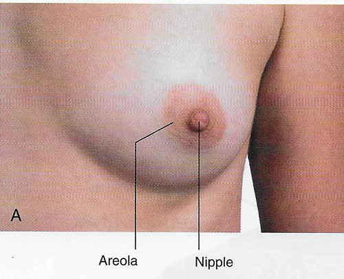
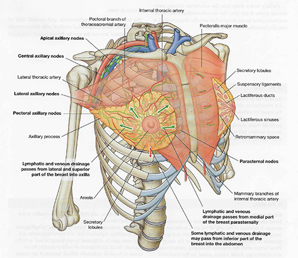

Lab 1 - Module 1: Pectoral Region - Page 3 of 5
Breast and Mammary Glands
|  |
| Tap on image to enlarge |
|  |
| Tap on image to enlarge |
| Identify the following structures using the diagram to help you locate the structures. Check off each of the following:
- The circular areas of skin around the nipples are called areolae. - Lactiferous ducts give rise to lobules of glandular tissue (mammary glands). Each lobule is drained by a lactiferous duct, each of which opens on the nipple. - The lactiferous ducts extend from the nipple like spokes of a wheel. Under the areola each duct has a dilated portion, called the lactiferous sinus, in which milk accumulates during lactation. - The mammary gland is situated within the superficial fascia. The mammary gland is firmly attached to the skin of the breast by suspensory (Cooper) ligaments; these bands support the breast. At puberty the lactiferous ducts undergo branching and thereafter progressive enlargement of the breasts occurs. |